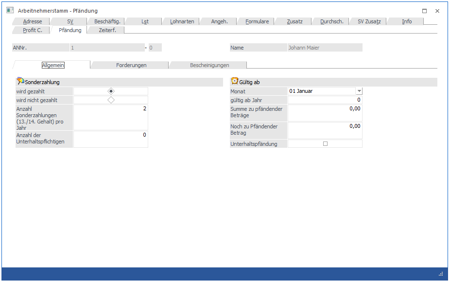
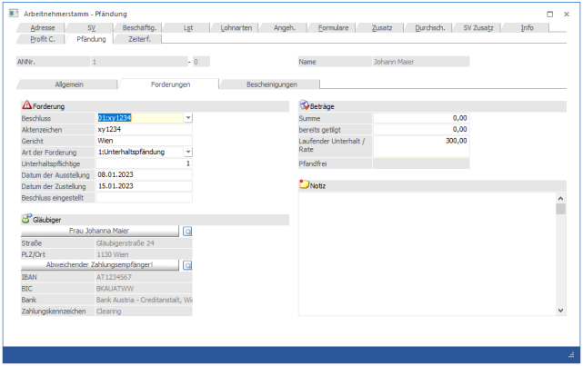
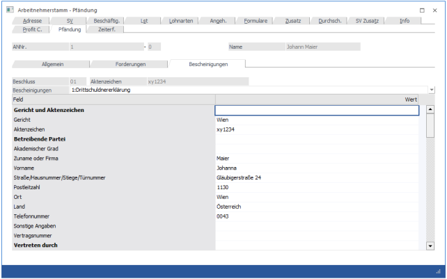

In diesem Fenster, das über den Menüpunkt
1 Stammdaten
1 Arbeitnehmer
1 Arbeitnehmerstamm
oder Schnellaufruf
1 STRG + A
1 Register Arbeitnehmerstamm - Pfändung
aufgerufen wird, können alle relevanten Informationen für eine durchzuführende Pfändung eingetragen werden.
Hinweis:
Die pfändungsrelevanten Daten können nur dann bearbeiten werden, wenn die Lizenz für das Modul WinLine Pfändung vorhanden ist.
Das Register Pfändung ist in 3 Bereiche unterteilt:
Allgemein
In diesem Bereich können die Basiseinstellungen für eine Pfändung verwaltet werden, bzw. hier kann wie bisher der gesamte Pfändungsbetrag eingegeben werden
Forderungen
In diesem Bereich können die einzelnen Pfändungstitel bzw. Vormerkungen verwaltet werden. Dabei kann auch ein Rang hinterlegt werden und für die Auszahlung können auch eigene Zahlungsempfänger hinterlegt werden.
Bescheinigungen
Drittschuldnererklärungen, Verständigung vom Bezugsende, etc. können in diesem Bereich ausgestellt werden.
Register Allgemein

Sonderzahlung
Ø wird gezahlt / wird nicht gezahlt
Für die Berechnung der Pfändung ist es auch notwendig zu wissen, ob der AN Sonderzahlungen erhält oder nicht. Daher kann zwischen den Optionen "wird gezahlt" und "wird nicht gezahlt" gewählt werden.
Ø Anzahl Sonderzahlungen (13./14. Gehalt) pro Jahr
Für die Berechnung der Pfändungen von Sonderzahlungen muss hier die Anzahl der Sonderzahlungen eingetragen werden, die der AN im Jahr erhält. Dies ist deshalb notwendig, weil bei Sonderzahlungen max. 2 zusätzliche Freibeträge berücksichtigt werden dürfen.
Ø Anzahl der Unterhaltspflichtigen:
In diesem Feld wird die Anzahl der Unterhaltspflichtigen eingetragen. Dies hat Auswirkung auf die Berechnung des Existenzminimums.
Gültig ab
Ø Monat
Aus der Auswahllistbox kann das Monat gewählt werden, ab dem die Pfändung berechnet werden soll.
Ø gültig ab Jahr
In diesem Feld kann zusätzlich das Abrechnungsjahr, in dem die Pfändung beginnt, eingetragen werden. Das Jahr muss immer 4stellig eingetragen werden.
Ø Summe zu pfändender Beträge:
In diesem Feld wird die Summe der Exekution eingetragen.
Ø Noch zu pfändender Betrag:
In diesem Feld wird der Restbetrag, der noch zu pfänden ist, ausgewiesen. Dieser Betrag wird vom Programm im Zuge der Abrechnung automatisch errechnet, kann aber auch manuell verändert werden.
Ø Unterhaltspfänd.
Wird diese Checkbox aktiviert, dann handelt es sich bei der Pfändung um eine Unterhaltspfändung. Das bewirkt, dass zusätzlich zur "normalen" Pfändung nochmals 25 % vom Netto gepfändet werden können.
Register Forderungen
Im Register Forderungen, können diverse Pfändungstitel bzw. Vormerkungen hinterlegt werden:

Ø Beschluss
Aus der Auswahllistbox kann ein Beschluss gewählt werden, der bearbeitet werden soll. Soll ein neuer Beschluss angelegt werden, muss die Option "99:Neuer Pfändungsbeschluss" ausgewählt werden. Die Beschlüsse werden in der Reihenfolge gespeichert, wie sie erfasst werden. Die Reihenfolge der Erfassung hat aber nichts mit der Reihenfolge der Berücksichtigung zu tun.
Ø Aktenzeichen
Hier muss das Aktenzeichen des Pfändungsbeschlusses hinterlegt werden. Unter diesem Aktenzeichen kann die Pfändung dann in weiterer Folge auch wieder aufgerufen werden.
Ø Gericht
Hier muss das Gericht eingetragen werden, von dem der Beschluss ausgestellt wurde (außer es handelt sich um einen Typ "Netto Abzug (Aconto)).
Ø Art der Forderung
Die Art der Forderung bestimmt, wie die Pfändung berechnet wird. Dabei gibt es folgende Varianten:
ü 0:Sachpfändung
Normale Pfändung
mit Prüfung auf das Existenzminimum
ü 1:Unterhaltspfändung
Bei einer
Unterhaltspfändung verringert sich der unpfändbare Freibetrag auf 75 %, daher
kann dann ein höherer Betrag gepfändet werden.
ü 2:Vormerkung
Bei der Vormerkung
wird noch keine Pfändung berechnet, die Vormerkung dient in erster Linie dazu,
den Rang "zu sichern". Wenn die Vormerkung dann "Schlagend" wird, muss die Art
der Forderung umgestellt werden.
ü 3:Netto Abzug (Aconto)
Mit
dieser Art der Forderungen können z.B. Firmenkredite oder fixe Ratenzahlungen
gelöst werden.
Ø Unterhaltspflichtige
Dieses Feld steht nur dann zur Verfügung, wenn die Art der Forderung eine Unterhaltspfändung ist. Bei der Anlage eines neuen Unterhaltspfändungstitels, wird automatisch 1 vorgeschlagen, da dies der 'Standardfall' ist. Gibt es allerdings einen Pfändungsbeschluss, der auf mehrere Unterhaltspflichtige lautet, kann in diesem Feld die Anzahl der Unterhaltspflichtigen eingetragen werden. Somit wird bei der Ermittlung des Pfandfreibetrages die richtige Anzahl an Unterhaltspflichtigen berücksichtigt.
Ø Datum der Ausstellung
Hier wird das Datum der Ausstellung des Pfändungsbeschlusses hinterlegt.
Ø Datum der Zustellung
Hier wird das Datum eingetragen, an dem der Pfändungsbeschluss zugestellt wurde. Dieses Datum ist auch für die Reihenfolge (Rang) bei der Pfändungsberechnung verantwortlich. Wenn 2 oder mehrere Pfändungsbeschlüsse am gleichen Tag zugestellt werden, muss überall das gleiche Datum eingetragen werden. In dem Fall wird der Pfändungsbetrag auch entsprechend (im Verhältnis) der Forderungen der gleichen Ränge aufgeteilt.
Ø Beschluss eingestellt
Wenn hier ein Datum eingetragen wird, dann wird keine Pfändung mehr berechnet.
Ø Noch kein Gläubiger hinterlegt!
Durch Anklicken dieses Buttons kann ein Gläubiger hinterlegt werden. Dadurch wird das Fenster "Kontakte" geöffnet, wo dann die relevanten Daten hinterlegt werden können. Wenn im Kontakt auch die entsprechenden Bankinformationen hinterlegt werden, kann auch eine automatische Überweisung an den Gläubiger erzeugt werden.
Wurden die Daten im Kontaktestamm ordnungsgemäß ausgefüllt, dann wird anstatt der Bezeichnung "Noch kein Gläubiger hinterlegt!" der Name des Gläubigers angezeigt. Darunter wird dann die im Kontaktestamm eingetragene Adresse angezeigt. Eine Änderung der Daten kann nur durch erneutes Anklicken des Buttons durchgeführt werden.
Ø Abweichender Zahlungsempfänger!
Durch Anklicken dieses Buttons kann ein Zahlungsempfänger hinterlegt werden, wobei wieder das Fenster Kontaktestamm geöffnet wird. Dies ist allerdings nur dann notwendig, wenn der Zahlungsempfänger NICHT der Gläubiger selbst ist.
Wurden die Daten im Kontaktestamm ordnungsgemäß ausgefüllt, dann wird anstatt der Bezeichnung "Abweichender Zahlungsempfänger!" der Name des Zahlungsempfängers angezeigt.
Darunter sind dann die Bankinformationen sichtbar, welche entweder beim Gläubiger oder beim Zahlungsempfänger hinterlegt sind.
Ø Summe
Hier wird der Pfändungsbetrag (Summe lt. Pfändungsbeschluss) eingetragen.
Ø Bereits getilgt
Hier wird nur dann ein Wert eingetragen, wenn zusätzliche Zahlungen (nicht über die Lohnverrechnung) durchgeführt wurden und somit der Pfändungsbetrag vermindert wurde. Dieses Feld wird nicht durch die Pfändungsberechnung beschickt.
Ø Laufender Unterhalt / Rate
Hier wird die Rate laut Pfändungsbeschluss eingetragen.
Dieser Betrag wird auch nur dann zur Gänze abgezogen, wenn sich das mit dem pfändbaren Betrag ausgeht.
Ø Pfandfrei (wird derzeit noch nicht unterstützt)
Unter bestimmten Umständen kann der AN einen Pfandfreien Betrag festlegen lassen, der nicht dem Existenzminimum bzw. den Pfändungsfreibeträgen entspricht. Dieser Betrag übersteuert die vom Programm berechneten Pfändungsfreibeträge.
Ø Notiz
In diesem Feld kann eine Notiz zum Pfändungsbeschluss hinterlegt werden.
Register Bescheinigungen
Hier kann man zwischen 4 Bescheinigungen wählen:
Drittschuldnererklärung, Verständigung vom Bezugsende und Ankündigung über die Nichtberücksichtigung des Zahlungsverbotes. Die Felder der Bescheinigungen werden mit den im AN-Stamm hinterlegten Daten vorbelegt und können editiert und erweitert werden.
Die Einstellungen können durch einen Klick auf den Drucken-Button gedruckt werden
